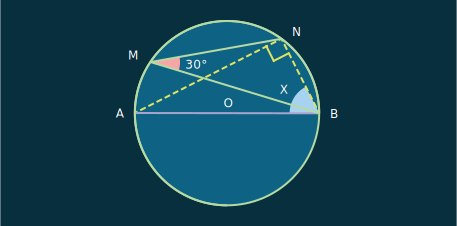
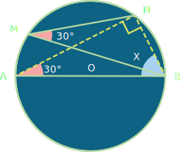

See how angles subtended by the same chord in the same segment are equal in measure.
A
B
Q
P
Find the value of x in the figure. O is the centre of the circle.

Solution

• ∠BAN and ∠NMB are the angles subtended by the same segment BNMA.
• ∴ ∠BAN = ∠NMB = 30° [by theorem].
• Also, AB is the diameter. Hence,
∠ANB = 90°.
• In △ABN, ∠ANB = 90° and ∠BAN = 30°.
• ∴ ∠ANB + ∠BAN + x = 180°
⇒ 90°
+ 30° + x = 180°
⇒
x = 60°